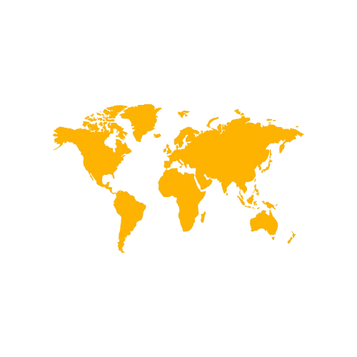
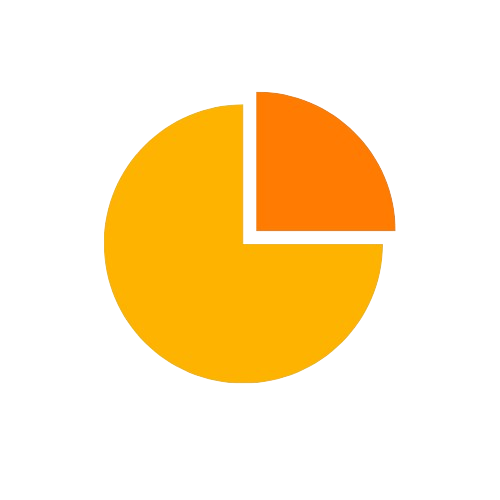
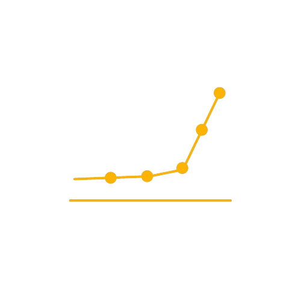

Bun venit pe UnX, platforma care îți oferă acces la date actualizate și relevante despre șomajul din România în ultimele 12 luni. Cu UnX, poți naviga cu ușurință prin grafice și diagrame pentru a examina evoluția șomajului în diferite regiuni, sectoare și grupuri demografice.
Metode de vizualizare
-

Cartografic
-

Diagrame circulare
-

Grafice de bare
-

Grafice